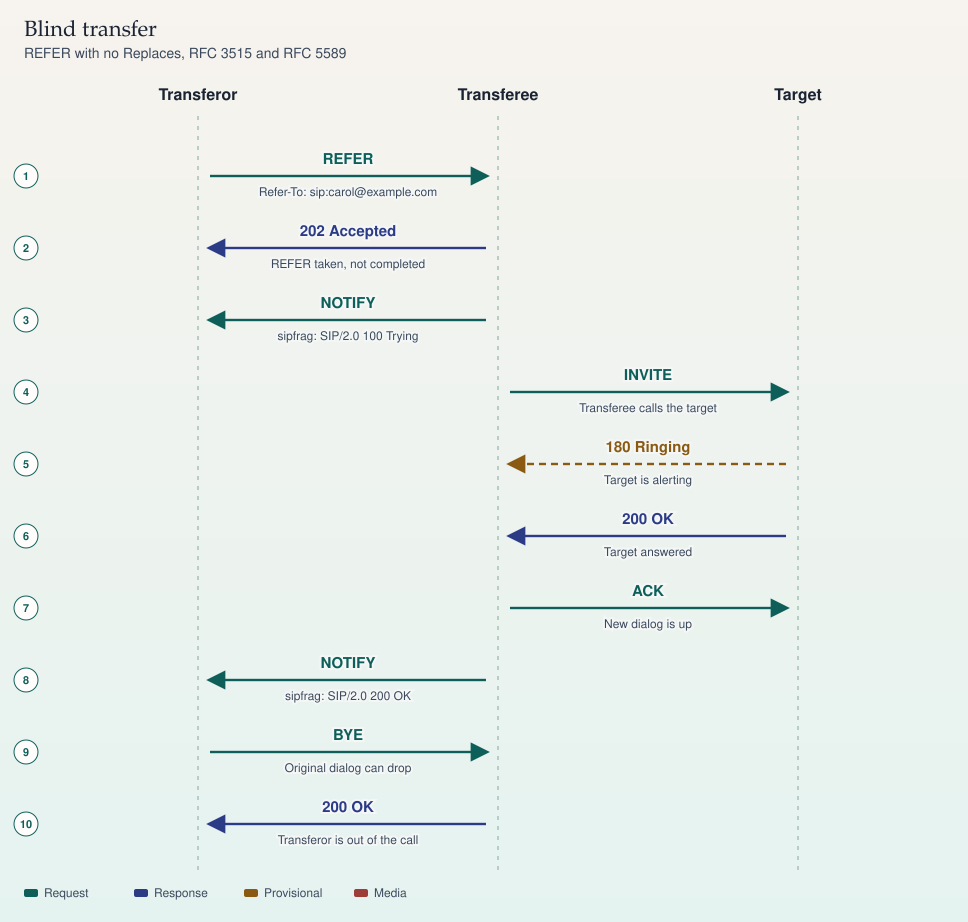
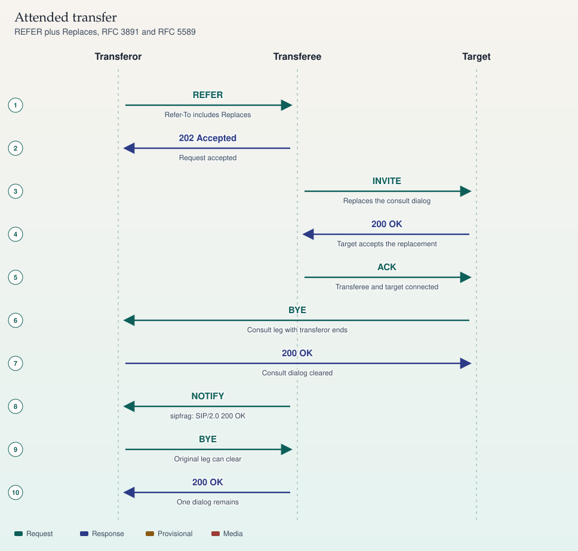

REFER · RFC 3515 and 3891
Transfer
Blind transfer refers the dialog. Attended transfer adds Replaces so the consult leg is taken over.
- REFER — Refer-To is Carol. Alice asks Bob to call Carol.
- 202 — 202 accepts the REFER. It does not mean Carol answered.
- INVITE — Bob places the new call.
- NOTIFY — The subscription tells Alice how the new call is going.
- INVITE — Alice consults Carol on a second dialog.
- 200 — The consult is up.
- REFER — Refer-To carries Replaces for the consult dialog.
- INVITE — Bob invites Carol with Replaces. Carol drops Alice's consult.
202 is not a completed transfer. Read the NOTIFY body, or the new dialog, before you tell the user it worked.
Sources
Study card carried forward
SIP · RFC 3515 · RFC 5589
Transfer
Transfer asks one party to call someone else. Blind transfer names a URI. Attended transfer names an existing consult dialog with Replaces.

On a phone, swipe a wide ladder sideways. The steps below repeat the same sequence.
Blind transfer
- REFER — Transferor to Transferee. Refer-To: sip:carol@example.com
- 202 Accepted — Transferee to Transferor. REFER taken, not completed
- NOTIFY — Transferee to Transferor. sipfrag: SIP/2.0 100 Trying
- INVITE — Transferee to Target. Transferee calls the target
- 180 Ringing — Target to Transferee. Target is alerting
- 200 OK — Target to Transferee. Target answered
- ACK — Transferee to Target. New dialog is up
- NOTIFY — Transferee to Transferor. sipfrag: SIP/2.0 200 OK
- BYE — Transferor to Transferee. Original dialog can drop
- 200 OK — Transferee to Transferor. Transferor is out of the call

On a phone, swipe a wide ladder sideways. The steps below repeat the same sequence.
Attended transfer
- REFER — Transferor to Transferee. Refer-To includes Replaces
- 202 Accepted — Transferee to Transferor. Request accepted
- INVITE — Transferee to Target. Replaces the consult dialog
- 200 OK — Target to Transferee. Target accepts the replacement
- ACK — Transferee to Target. Transferee and target connected
- BYE — Target to Transferor. Consult leg with transferor ends
- 200 OK — Transferor to Target. Consult dialog cleared
- NOTIFY — Transferee to Transferor. sipfrag: SIP/2.0 200 OK
- BYE — Transferor to Transferee. Original leg can clear
- 200 OK — Transferee to Transferor. One dialog remains
REFER is not the result
202 Accepted means the transferee accepted the REFER request. It does not mean the target answered. Progress arrives in NOTIFY requests. The body is message/sipfrag, a slice of a SIP status line such as SIP/2.0 180 Ringing or SIP/2.0 200 OK. Each NOTIFY is itself answered with a 200 OK; those answers are omitted from the drawing so the story stays readable.
RFC 3515 defines REFER and the implicit subscription that carries those NOTIFYs. RFC 4488 defines Refer-Sub: false for the case where the sender wants to suppress that subscription. RFC 5589 describes how to use these tools for call transfer.
Blind versus attended
A blind transfer puts a target URI in Refer-To and does not identify an existing dialog. The transferee sends a fresh INVITE to that URI. In the lab, that URI is sip:carol@example.com, reached at fictional number 555-0102.
An attended (consultative) transfer happens after the transferor has already called the target. The transferee is usually on hold. Refer-To carries a Replaces parameter that names the consult dialog: its Call-ID, to-tag, and from-tag (RFC 3891). The transferee's INVITE includes Replaces. If the target accepts, the consult dialog is replaced by the new one, and a BYE clears the leg that is no longer needed.
Which side sends the final BYE can vary by implementation. The outcome you should be able to prove is simpler: one dialog remains, between transferee and target, and the transferor is no longer on either leg.
Sources
- RFC 3515, the SIP REFER method
- RFC 3891, the Replaces header
- RFC 4488, suppressing the implicit REFER subscription
- RFC 5589, SIP call control, transfer